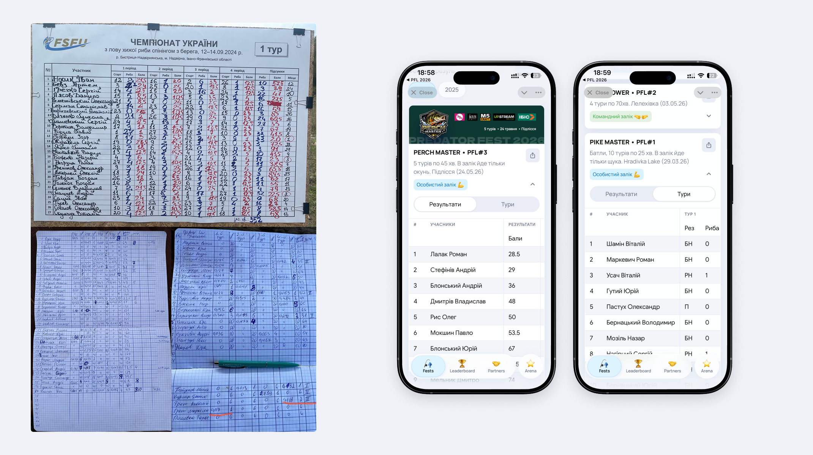
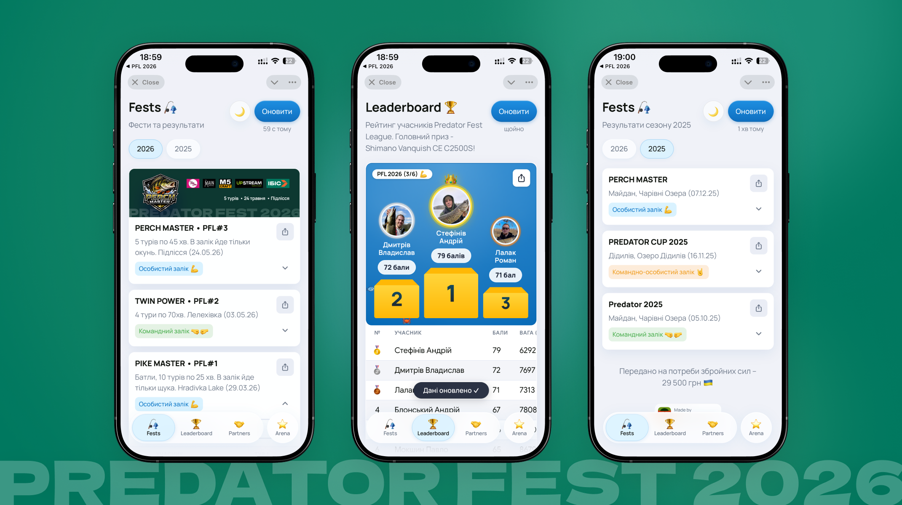
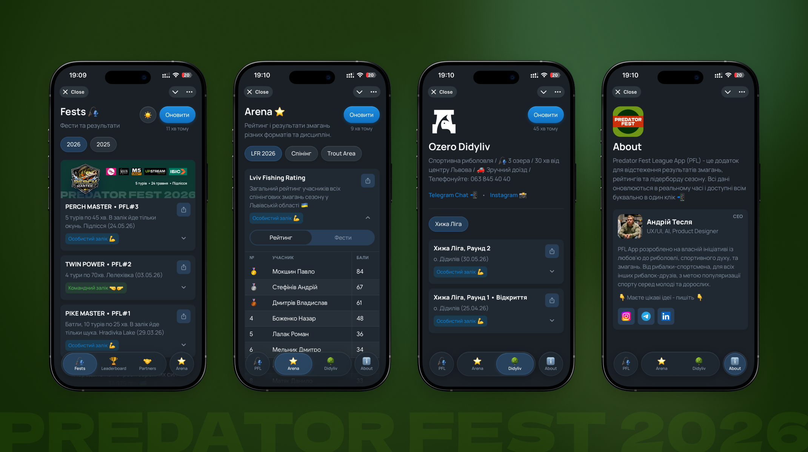

Overview
Project Overview
Live at predatorfest.com · tg: @predatorfest
Predator Fest League (PFL) is a competitive fishing league I founded in Lviv — solo, from scratch, as CEO and the only person behind the entire project. I noticed the same problem at almost every tournament — results scribbled on paper at the weigh-in, photographed once, dropped into a Telegram chat, and effectively lost forever.
I designed and built the PFL App from scratch — a Telegram Mini App and PWA that gives every participant instant access to live results, tournament standings, a full season leaderboard, and partner information. All data updates in real time directly from a Google Sheet. No backend, no database, no overhead.
The app has been live across multiple seasons, tracked 80+ participants, and helped the community raise 64,375 UAH for Ukraine's armed forces through competition entry fees.
🇺🇦 64,375 UAH raised for the Armed Forces of Ukraine across all PFL events
Problem
The Problem I Kept Running Into
After moving to Lviv and getting seriously into competitive spin fishing, I noticed the same friction at practically every second tournament. The system technically worked — but only for the organiser holding the pen.
Scores were written by hand on paper during the weigh-in, then photographed and dropped into a Telegram group. If you missed the message or the chat was busy, your result was gone. Season standings lived in a Google Sheet that only one person had access to.
This is exactly the kind of problem familiar to anyone who works in product: the system technically works, but using it is genuinely uncomfortable.
Root insight
The data already existed — it just lived in the wrong place. The fix wasn't a new data model, it was a better interface over data that was already there.
📄
Results on paper
Scores written at weigh-in, photographed once, shared in chat — then effectively impossible to find.
💬
Data scattered in chats
Part in Telegram messages, part in photo albums, part in someone's private spreadsheet.
🔍
No quick lookup
Checking your season standing required scrolling through weeks of chat history.
❌
Manual counting errors
Complex scoring rules — place points + bonus points — led to frequent miscalculations by hand.

Solution
Why a Telegram Mini App?
The fishing community lives in Telegram. A native iOS/Android app would mean App Store submissions, installs, updates, and a completely separate context from where people already communicate. A Telegram Mini App opens with one tap inside the chat they use every day — no install, no friction, native on mobile by default.
My choice was about meeting users exactly where they already are — a core UX principle — while keeping the architecture simple enough to build and maintain solo.
01
Google Sheets as DB
Organisers enter results in a familiar spreadsheet. Zero learning curve, zero new tools to adopt.
02
Apps Script API
A thin Google Apps Script layer reads the sheet and exposes a clean JSON endpoint — an instant backend.
03
Vanilla JS front-end
No framework overhead. Fast initial load inside Telegram's Mini App webview — critical for mobile performance.
04
GitHub + CI/CD
Staging and production environments. Changes deploy automatically on push — same as professional engineering teams.
Data flow — from spreadsheet to participant's phone
Google
Sheets
Organiser enters
results here
→
Apps
Script
Reads & exposes
JSON endpoint
→
PFL
Mini App
Renders live data
in Telegram / PWA
Design & UX
Interface Design
The visual identity — deep forest green with gold — comes directly from the brand materials I designed for Predator Fest events. It signals "outdoors, sport, serious competition" without a word. The interface is built around five core tabs, each solving a specific job-to-be-done for a participant standing at the water's edge on their phone.

Live individual & team standings per round
Multi-year archive — 2025 and 2026 seasons
Per-tournament breakdown: results, catches, placements
Updates in real time as organiser enters weigh-in data
Points accumulated across all 6 season events
Grand prize race — Shimano Vanquish 2500S
Bonus point tracking: participation, BigFish, referrals
Tiebreaker logic: wins → total weight across season
Cross-format standings across different competition types
Perch, Pike, and multi-species event tracking
Separate views for individual vs team formats
Dedicated section for Ozero Didyliv venue results
Local rankings and historical catches
Real-time updates from the same sheet infrastructure

Product Complexity
The Scoring System Behind the App
One of the real design challenges was making a genuinely complex scoring model feel transparent and simple to understand. The PFL season uses placement-based points across 6 events, with multiple bonus point categories and a tiebreaker chain.
Placement points per event
Bonus points (per event)
Participation in event
+10
Instagram story w/ sponsor tag
+3
Inviting a new participant
+2
Grand prize condition: minimum 5 of 6 events attended. Top scorer with ≥5 fests wins the Shimano Vanquish 2500S or premium rod up to 20k UAH.
Technology
Built Solo, Built to Last
The entire app was designed, built, and deployed by me — a product designer who used AI-assisted development to go from idea to production without a dedicated engineering team. This was a deliberate experiment in what a designer can ship independently in 2024–2025.
📊
Google Sheets
The "database". Organisers use it like a familiar spreadsheet — no new tools, zero training, zero errors from manual re-entry.
⚙️
Google Apps Script
Acts as a lightweight API layer. Reads the sheet, applies scoring logic, returns clean JSON to the front-end.
⚡️
Vanilla JS
No framework, no build step. Fast initial load inside Telegram's Mini App webview — critical for mobile performance.
🐙
GitHub + CI/CD
Staging and production branches. Automated deploys on push — same workflow used by professional engineering teams.
✈️
Telegram Mini App
Native Telegram integration. Opens in one tap from the community channel — no install, no app store, no friction.
🌐
Progressive Web App
Also accessible at predatorfest.com — same codebase, works on any device or browser.


Results
Impact
A real product, used by a real community, built by one person with a passion for fishing and product design.
80+
Participants tracked across tournaments in the 2025–2026 seasons.
Growing community · Lviv & region
64k UAH
Raised for Ukraine's Armed Forces from competition entry fees across all events.
🇺🇦 Sport with a purpose
1 tap
That's all it takes to check live results during a tournament — from any device, any time.
vs. digging through chat history before
What this project actually proves: a designer can ship.
Identified a real problem from personal experience — then built the solution end-to-end
Designed the full product: IA, visual identity, UI system, event brand materials — all consistent
Shipped a working Telegram Mini App + PWA using AI-assisted development
Maintained staging / production CI/CD — same workflow as professional engineering teams
Iterated based on real feedback from an active community across multiple seasons